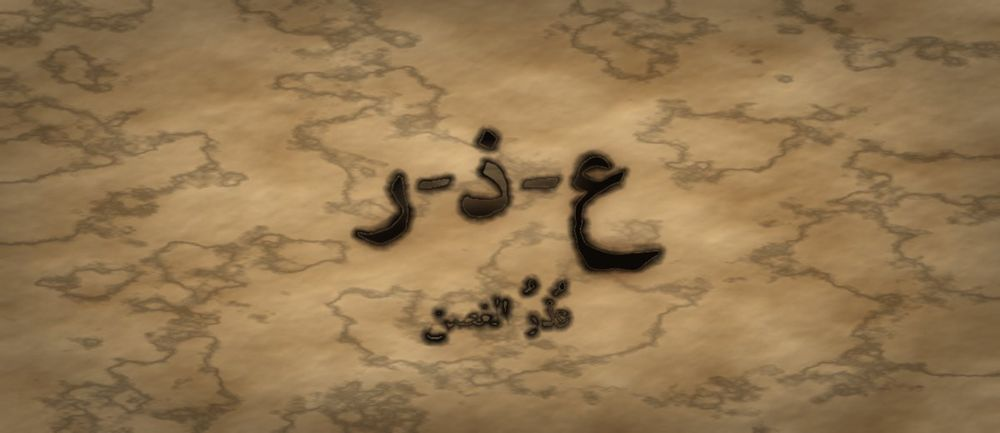

مَطبعةُ جُذور · دبي · MCMXXVI · سِلْسِلَةُ فَنِّ البَيان

مَرحلةُ الغُصْن · الفئة ١٠–١٢ · الجذر ع-ذ-ر · عمر بن الخطّاب
❦ ✦ ❧
السِّفْرُ ١١ — عُذرُ الغصن
«أَعْتَذِرُ لِأُصْلِحَ، لَا لِأَنْجُوَ»

الرِّسَالَةُ الجَوْهَرِيَّة
الاعْتِذارُ لَيْسَ هَزِيمَةً وَلا كَلِمَةً تُقالُ لِيَسْكُتَ الخِلافُ، بَلْ فِعْلٌ مِنْ ثَلاثَةِ أَجْزاءٍ: أُسَمِّي ما فَعَلْتُ، وَأَعْتَرِفُ بِأَثَرِهِ فِي غَيْرِي، وَأَعْرِضُ إِصْلاحًا. وَمَنْ قَوِيَ عَلَى أَنْ يَقُولَ «أَخْطَأْتُ» فَقَدْ مَلَكَ نَفْسَهُ، لا مَنْ قَوِيَ عَلَى أَنْ يُنْكِرَ.
بِطَاقَةُ هُوِيَّةِ السِّفْر
| المستوى / الدرجة | غُصْنٌ — غُصْنٌ يَنْحَنِي وَلا يَنْكَسِرُ (الدرجةُ الرابعةُ في مستوى الغصن) |
| الفئة العمرية | ١٠–١٢ سنة · نطاقُ تداخلٍ يمتدُّ إلى ١٣ |
| الجذر الأساسي | ع – ذ – ر · العُذْرُ: ما يُزيلُ اللَّوْمَ ويُصلِحُ الأثرَ |
| أسرة الجذر | عُذْر · اعْتَذَرَ · مَعْذِرة · أَعْذار · عاذِر · مَعْذُور (كلُّها من ع-ذ-ر) |
| المحطّة | العُذْرُ — أوّلُ إصلاحٍ يبدأُ من الذاتِ لا من الآخرِ |
| المرساة الحسّيّة | الكفُّ المفتوحُ إلى أعلى: يفتحُهُ الطفلُ بنفسِهِ ويقولُ «أَخْطَأْتُ»، فيصيرُ الكفُّ ظرفًا يحملُ الخطأَ لا درعًا يدفعُهُ |
| الاستعارة | الغصنُ الذي انكسرَ منهُ عودٌ فجرحَ جارَهُ، ينحني ليَجْبُرَ لا ليَختبئَ |
| الشخصيتان الحكيمتان | عمرُ بنُ الخطّابِ رضي الله عنه (رجوعُ القويِّ إلى الحقِّ) + الجَدّةُ رملة |
| الشخصية الرمزيّة | نورُ الغصنِ (نفسُها — تنمو) |
| الشخصية المضادّة | الجِدارُ الصَّلْدُ — شخصيّةٌ رمزيّةٌ (لا تاريخيّةٌ) تظنُّ أنَّ الصلابةَ ألَّا تعترفَ، ثمَّ تتعلَّمُ أنَّ فيها بابًا |
| مؤشّرُ النموّ (وصفيٌّ للرصدِ لا بوّابةٌ) | يُسمّي فِعْلَهُ بلا «لكِنْ»، ويَعرِضُ إصلاحًا محدَّدًا |
| مجال CASEL | إدارةُ الذاتِ + الوعيُ الاجتماعيُّ (Self-Management · Social Awareness) |
| المرجعُ النظريّ | استرشادًا بـ TRT — نَظَرِيَّةِ القراءةِ الملموسةِ · واسترشادًا بأدبيّاتِ التربيةِ الترميميّةِ |
صَاحِبُ السِّفْرِ مِنَ التُّرَاث
عمرُ بنُ الخطّابِ رضي الله عنه (نحو ٥٨٤–٦٤٤م) ثاني الخلفاءِ الراشدينَ، اشتُهرَ بالعدلِ وبقَبولِ المراجعةِ حتى عُرِفَ عنهُ رجوعُهُ عن رأيِهِ إذا بانَ لهُ الصوابُ على لسانِ غيرِهِ، وقولُهُ المشهورُ في محاسبةِ نفسِهِ. نستلهمُ منهُ هنا: أنَّ الاعترافَ بالخطأِ من علاماتِ القوّةِ، وأنَّ صاحبَ المسؤوليّةِ أَوْلَى الناسِ بالاعتذارِ.
الشَّخْصِيَّةُ المُضَادَّة — الجِدارُ الصَّلْدُ — جدارٌ حجريٌّ في طرفِ البستانِ يفخرُ بأنَّهُ لم يَلِنْ قَطُّ، ويرى في كلِّ اعترافٍ شَقًّا يُسقِطُهُ. يتعلَّمُ في النهايةِ أنَّ في وسطِهِ بابًا صغيرًا كانَ مُغلَقًا، وأنَّ فَتْحَهُ لم يُسقِطْهُ بل جعلَ الناسَ يَعبُرونَ منهُ.
الجَذْرُ وَأُسْرَتُه
ع-ذ-ر — عُذْر · اعْتَذَرَ · مَعْذِرة · أَعْذار · عاذِر · مَعْذُور
الجذرُ (ع-ذ-ر) صحيحٌ سالمٌ. و«اعْتَذَرَ» على وزنِ افْتَعَلَ، وهو وزنٌ يفيدُ هنا تكلُّفَ الفعلِ ومعاناتَهُ من النفسِ — فالاعتذارُ جُهْدٌ داخليٌّ لا كلمةٌ عابرةٌ. ويُفرَّقُ للمعلّمِ بينَ «مَعْذِرة» (طلبُ رفعِ اللومِ) و«عُذْر» (ما يُقدَّمُ من بيانٍ)؛ ويُنَبَّهُ إلى أنَّ «مَعْذُور» اسمُ مفعولٍ يصفُ مَن قُبِلَ عذرُهُ، لا مَن اعتذرَ.
القِصَّةُ الكَامِلَة
المشهد ١ — نورُ تكسِرُ شيئًا صغيرًا ثمَّ تُدافِعُ
في البستانِ إناءٌ فَخّارِيٌّ قديمٌ، فيهِ بذورٌ جمعَها الأطفالُ طوالَ الموسمِ. مرَّتْ نورُ مسرعةً وهي تُحاوِرُ صديقَتَها — وقد صارَتْ تُحسِنُ الحِوارَ منذُ السِّفرِ الماضي — فلمَسَ كُمُّها الإناءَ فسقطَ وانكسرَ، وتناثرَتِ البذورُ في التُّرابِ. اجتمعَ الأطفالُ، ونظرَ إليها صاحبُ الإناءِ ولم يقلْ شيئًا. فشعرَتْ نورُ بحرارةٍ في وجهِها، وسمعَتْ صوتَها يخرجُ قبلَ أن تُفكِّرَ: «أَنا لَمْ أَقْصِدْ! وَمَنْ وَضَعَهُ فِي المَمَرِّ أَصْلًا؟ وَهُوَ قَدِيمٌ وَكانَ سَيَنْكَسِرُ عَلَى كُلِّ حالٍ!» صمتَ الجميعُ. ولم يكنْ صمتَ اقتناعٍ. مشَتْ نورُ بعيدًا وهي تشعرُ أنَّها انتصرَتْ في شيءٍ وخسرَتْ شيئًا أكبرَ منهُ. جلسَتْ عندَ الجدارِ وقالتْ لنفسِها: «قُلْتُ كَلامًا كَثِيرًا صَحِيحًا... فَلِمَ أَشْعُرُ أَنِّي كاذِبَةٌ؟»
المشهد ٢ — الجِدارُ الصَّلْدُ يُعلِّمُها فنَّ «لكِنْ»
كانَ الجدارُ الذي جلسَتْ إليهِ هوَ الجِدارَ الصَّلْدَ. قالَ لها بصوتٍ ثقيلٍ: «أَحْسَنْتِ يا نُورُ! هَكَذا يَفْعَلُ الأَقْوِياءُ. أَنا واقِفٌ هُنا مُنْذُ مِئَةِ عامٍ، وَلَمْ أَقُلْ يَوْمًا: أَخْطَأْتُ. مَنْ قالَها انْشَقَّ، وَمَنِ انْشَقَّ سَقَطَ.» ثمَّ علَّمَها حِيلتَهُ المفضَّلةَ: «إِذا اضْطُرِرْتِ إِلَى الاعْتِذارِ فَضَعِي بَعْدَهُ لَكِنْ. قُولِي: آسِفَةٌ، لَكِنَّكَ أَنْتَ الَّذِي... وَهَكَذا تَخْرُجِينَ نَظِيفَةً.» جرَّبَتْ نورُ ذلكَ ثلاثةَ أيّامٍ. كانتْ تقولُ «آسِفَةٌ» ثمَّ تضعُ «لكِنْ»، فتُلاحِظُ أنَّ وجهَ مَن أمامَها يتغيَّرُ عندَ «لكِنْ» بالضبطِ، كأنَّ الكلمةَ الأولى تُمحى. وفي اليومِ الثالثِ لم يعدْ أحدٌ يجلسُ بجوارِها في حَلْقةِ الحديقةِ. وكانَ الإناءُ ما يزالُ مكسورًا، والبذورُ ما تزالُ في التُّرابِ.
المشهد ٣ — الجَدّةُ رملةُ تُفكِّكُ الكلمةَ
جاءَتِ الجَدّةُ رملةُ وجلسَتْ على مسافةِ ذراعٍ منها، ولم تمدَّ يدَها إليها، وقالتْ: «هَلْ تَأْذَنِينَ لِي أَنْ أَجْلِسَ؟» قالتْ نورُ: «نَعَمْ.» قالتِ الجَدّةُ: «كَلِمَةُ آسِفٌ وَحْدَها بابٌ، لَكِنَّ البابَ لا يَنْفَعُ إِنْ لَمْ يُفْتَحْ. وَالاعْتِذارُ ثَلاثَةُ أَجْزاءٍ يا نُورُ: أَنْ تُسَمِّي ما فَعَلْتِ بِلا زِينَةٍ — كَسَرْتُ الإِناءَ. وَأَنْ تَقُولِي أَثَرَهُ فِي غَيْرِكِ — ضاعَ تَعَبُ شَهْرٍ عَلَيْكُمْ. وَأَنْ تَعْرِضِي إِصْلاحًا — سَأَجْمَعُ البُذُورَ وَأُعِيدُ صُنْعَ إِناءٍ.» ثمَّ قالتْ: «وَهُناكَ كَلِمَةٌ واحِدَةٌ تُبْطِلُ الثَّلاثَةَ كُلَّها: لَكِنْ.» سألَتْ نورُ: «وَإِنْ كانَ لِي عُذْرٌ حَقِيقِيٌّ؟» قالتِ الجَدّةُ: «قُولِيهِ بَعْدَ يَوْمٍ، لا فِي أَثْناءِ الاعْتِذارِ. فَالعُذْرُ الَّذِي يَرْكَبُ ظَهْرَ الاعْتِذارِ يَقْتُلُهُ.»
المشهد ٤ — عمرُ بنُ الخطّابِ ورجوعُ القويِّ
وحكَتْ لها الجَدّةُ رملةُ عن عمرَ بنِ الخطّابِ رضي الله عنه، وكانَ أميرًا مهيبًا تخافُهُ الرجالُ. قالتْ: «كانَ يَخْطُبُ فِي النَّاسِ، فَتَقُومُ امْرَأَةٌ فَتُراجِعُهُ فِي مَسْأَلَةٍ، فَيَنْظُرُ فِي حُجَّتِها فَيَجِدُها صائِبَةً، فَيَقُولُ أَمامَ النَّاسِ كُلِّهِمْ إِنَّها أَصابَتْ وَإِنَّهُ أَخْطَأَ. وَلَمْ يَنْقُصْ ذَلِكَ مِنْ هَيْبَتِهِ شَيْئًا — بَلْ هَذا هُوَ الَّذِي جَعَلَ النَّاسَ يَثِقُونَ بِهِ. وَكانَ يُحاسِبُ نَفْسَهُ قَبْلَ أَنْ يُحاسِبَ غَيْرَهُ.» صمتَتْ نورُ طويلًا ثمَّ قالتْ: «يا جَدَّةُ، أَنا كُنْتُ أَظُنُّ أَنَّ الِاعْتِرافَ يُصَغِّرُنِي.» قالتِ الجَدّةُ: «الَّذِي يُصَغِّرُكِ أَنْ يَعْرِفَ النَّاسُ الحَقِيقَةَ وَأَنْتِ تُنْكِرِينَها. أَمَّا أَنْ تَسْبِقِيهِمْ إِلَيْها، فَذَلِكَ الَّذِي يَجْعَلُكِ أَكْبَرَ مِنَ الخَطَأِ نَفْسِهِ.»
المشهد ٥ — الاعتذارُ الكاملُ، والجِدارُ يكتشِفُ بابَهُ
عادَتْ نورُ إلى حَلْقةِ الحديقةِ. وقفَتْ أمامَ صاحبِ الإناءِ، وفتحَتْ كفَّها إلى أعلى، وقالتْ بصوتٍ واضحٍ بلا بكاءٍ وبلا زينةٍ: «كَسَرْتُ إِناءَكَ لِأَنِّي كُنْتُ أُسْرِعُ وَلَمْ أَنْظُرْ. ضاعَ بِسَبَبِي تَعَبُ شَهْرٍ جَمَعْتُمْ فِيهِ البُذُورَ. سَأَجْمَعُ ما بَقِيَ مِنْها فِي التُّرابِ حَبَّةً حَبَّةً، وَسَأَصْنَعُ إِناءً جَدِيدًا بِيَدِي. وَلَكَ أَنْ تَقْبَلَ أَوْ لا تَقْبَلَ.» ولم تقلْ «لكِنْ». صمتَ صاحبُ الإناءِ لحظةً، ثمَّ قالَ: «أَقْبَلُ. وَسَأَجْمَعُ مَعَكِ.» وجلسا يَنْقُشانِ التُّرابَ بأصابعِهما. ومن بعيدٍ كانَ الجِدارُ الصَّلْدُ يُراقِبُ ولا ينطقُ. ثمَّ قالَ بصوتٍ خافتٍ: «يا نُورُ... أَنا مُنْذُ مِئَةِ عامٍ أَقِفُ بَيْنَ بَيْتَيْنِ لِأَنِّي خِفْتُ أَنْ أَنْشَقَّ. وَاليَوْمَ عَرَفْتُ أَنَّ فِي وَسَطِي بابًا مُغْلَقًا مُنْذُ زَمَنٍ.» وفي الصباحِ وجدوا بابَ الجدارِ مفتوحًا، والناسُ يعبرونَ منهُ من بستانٍ إلى بستانٍ. ولم يسقطِ الجدارُ.
المشهد ٦ — صَمْتُ السُّؤالِ الجَسَدِيِّ
وقفَتْ نورُ في آخرِ النهارِ عندَ البابِ الجديدِ، وفتحَتْ كفَّها إلى أعلى كما يُفتَحُ ظرفٌ يحملُ شيئًا ثقيلًا. وهذا تدريبُكَ أنتَ الآنَ: «اجْلِسْ مُسْتَرِيحًا. افْتَحْ كَفَّكَ إِلَى أَعْلَى فَوْقَ رُكْبَتِكَ. قُلْ فِي سِرِّكَ: هَذا ما فَعَلْتُ — وَسَمِّهِ بِكَلِمَةٍ واحِدَةٍ صادِقَةٍ. ثُمَّ قُلْ: وَهَذا أَثَرُهُ فِي غَيْرِي. ثُمَّ اقْبِضْ كَفَّكَ بِرِفْقٍ وَقُلْ: وَهَذا ما سَأَفْعَلُهُ لِأُصْلِحَ. ثَلاثُ خُطُواتٍ، وَلا لَكِنْ بَيْنَها.» كُلُّ حَرَكَةٍ تُؤَدِّيها بِيَدِكَ أَنْتَ، وَلا يَمَسُّ يَدَكَ أَحَدٌ. وَإِنْ لَمْ تَكُنْ مُسْتَعِدًّا اليَوْمَ، فَاكْتُبِ الخُطُواتِ الثَّلاثَ فِي وَرَقَةٍ وَاحْتَفِظْ بِها — فَالِاسْتِعْدادُ نِصْفُ الإِصْلاحِ. وَتَذَكَّرْ أَنَّ الجِدارَ لَمْ يَسْقُطْ حِينَ فَتَحَ بابَهُ، بَلْ صارَ طَرِيقًا يَعْبُرُ مِنْهُ النَّاسُ بَيْنَ بُسْتانَيْنِ.
النُّسْخَةُ المُخْتَصَرَة
كَسَرَتْ نُورُ إِناءَ البُذُورِ وَهِيَ مُسْرِعَةٌ، فَقالَتْ: «لَمْ أَقْصِدْ! وَمَنْ وَضَعَهُ فِي المَمَرِّ؟» فَصَمَتَ الأَطْفالُ صَمْتًا ثَقِيلًا. قالَ لَها الجِدارُ الصَّلْدُ: «لا تَقُولِي أَخْطَأْتُ أَبَدًا؛ وَإِنِ اضْطُرِرْتِ فَقُولِي: آسِفَةٌ، لَكِنْ...» فَجَرَّبَتْ ثَلاثَةَ أَيَّامٍ، فَما جَلَسَ أَحَدٌ بِجِوارِها. قالَتِ الجَدَّةُ رَمْلَةُ: «الِاعْتِذارُ ثَلاثَةُ أَجْزاءٍ: سَمِّي فِعْلَكِ، وَقُولِي أَثَرَهُ، وَاعْرِضِي إِصْلاحًا. وَكَلِمَةُ لَكِنْ تُبْطِلُها.» وَحَكَتْ لَها كَيْفَ كانَ عُمَرُ بْنُ الخَطَّابِ يَرْجِعُ إِلَى الحَقِّ أَمامَ النَّاسِ فَلا يَنْقُصُ ذَلِكَ مِنْ هَيْبَتِهِ. فَعادَتْ نُورُ وَفَتَحَتْ كَفَّها وَقالَتْ: «كَسَرْتُ إِناءَكَ لِأَنِّي أَسْرَعْتُ، وَضاعَ تَعَبُ شَهْرٍ، وَسَأَجْمَعُ البُذُورَ وَأَصْنَعُ إِناءً.» وَلَمْ تَقُلْ لَكِنْ. فَجَلَسَ صاحِبُ الإِناءِ يَجْمَعُ مَعَها. وَاكْتَشَفَ الجِدارُ أَنَّ فِي وَسَطِهِ بابًا، فَفَتَحَهُ وَلَمْ يَسْقُطْ. وَفِي المَساءِ فَتَحَتْ نُورُ كَفَّها وَنَظَرَتْ إِلَيْهِ طَوِيلًا وَقالَتْ: «كُنْتُ أَظُنُّ الِاعْتِرافَ يُصَغِّرُنِي، فَإِذا هُوَ الَّذِي جَعَلَ صاحِبِي يَجْلِسُ بِجِوارِي مِنْ جَدِيدٍ.» وَما كانَ الإِناءُ الجَدِيدُ أَجْمَلَ مِنَ الأَوَّلِ، لَكِنَّهُ كانَ لَهُما مَعًا.
المِرْسَاةُ الحِسِّيَّة
يَفْتَحُ الطِّفْلُ كَفَّهُ إِلَى أَعْلَى فَوْقَ رُكْبَتِهِ وَيَنْظُرُ إِلَيْهِ، فَيَقُولُ فِعْلَهُ بِكَلِمَةٍ صادِقَةٍ، ثُمَّ أَثَرَهُ فِي غَيْرِهِ، ثُمَّ يَقْبِضُ كَفَّهُ بِرِفْقٍ وَهُوَ يَذْكُرُ ما سَيُصْلِحُهُ. الكَفُّ المَفْتُوحُ ظَرْفٌ يَحْمِلُ الخَطَأَ، وَالكَفُّ المَقْبُوضُ عَزْمٌ عَلَى الجَبْرِ. كُلُّ حَرَكَةٍ يُؤَدِّيها بِيَدِهِ وَحْدَهُ، وَلا يَمَسُّ يَدَهُ أَحَدٌ، وَلَهُ أَنْ يُؤَجِّلَ.
العَنَاصِرُ الخَمْسَةُ لِلتَّطْبِيق
| المُخرَجُ اللُّغَويُّ | صيغةُ الأجزاءِ الثلاثةِ: «فَعَلْتُ كَذا · وَأَثَرُهُ فِيكَ كَذا · وَسَأَفْعَلُ كَذا لِأُصْلِحَ.» تُدرَّبُ حتى تُقالَ في نَفَسٍ واحدٍ، ويُمنَعُ فيها لفظُ «لكِنْ» منعًا صريحًا. |
| الحركةُ الجسديّةُ | فتحُ الكفِّ إلى أعلى مع الجزأينِ الأوّلَينِ، ثمَّ قبضُهُ برفقٍ مع عرضِ الإصلاحِ — إشارةٌ جسديّةٌ تعني: حملْتُ خطئي، وسأحملُ إصلاحَهُ. |
| الدفءُ العلائقيُّ | حقُّ الطرفِ الآخرِ في ألَّا يقبلَ فورًا: يُختَمُ الاعتذارُ بـ«وَلَكَ أَنْ تَقْبَلَ أَوْ لا تَقْبَلَ»، فيتعلَّمُ المعتذِرُ أنَّ الاعتذارَ عطاءٌ لا مطالبةٌ بالبراءةِ. |
| البديلُ الحسّيُّ | «بطاقةُ الأجزاءِ الثلاثةِ»: يكتبُ المتعلّمُ الجُملَ الثلاثَ على بطاقةٍ ويُسلِّمُها إن عجزَ لسانُهُ عن الكلامِ. البطاقةُ اعتذارٌ كاملٌ لا ناقصٌ. |
| الجسرُ الإنجليزيُّ | «I am sorry — no 'but'. I did it, it hurt you, and I will fix it.» |
دَلِيلُ الأَهْلِ وَالمُعَلِّم
| قبل الجلسة | ضَعوا الأجهزةَ في صندوقٍ مغلقٍ. واختاروا موقفًا صغيرًا حدثَ فعلًا في البيتِ هذا الأسبوعَ، لا موقفًا مُتخيَّلًا. واتَّفِقوا مقدَّمًا: مَن اعتذرَ فلن يُذكَّرَ بخطئِهِ بعدَ اليومِ. |
| أثناء الجلسة | ابدَؤوا أنتم: ليعتذرْ أحدُ الوالدينِ عن شيءٍ صغيرٍ حقيقيٍّ بالأجزاءِ الثلاثةِ أمامَ الأبناءِ، بلا «لكِنْ». الاعتذارُ يُتعلَّمُ بالمشاهَدةِ أضعافَ ما يُتعلَّمُ بالتلقينِ. ثمَّ اتركوا للابنِ أن يختارَ أيَعتذرُ اليومَ أم غدًا. |
| بعد الجلسة | ضَعوا «دفترَ الجَبْرِ» على الثلّاجةِ: في كلِّ صفحةٍ سطرانِ — ما أُصلِحَ فعلًا، ومَن أُصلِحَ لهُ. لا تُسجَّلُ الأخطاءُ نفسُها، بل الإصلاحاتُ. والهدفُ رصدُ الأثرِ لا إحصاءُ الزلّاتِ ولا مقارنةُ الأبناءِ. |
مُؤَشِّرَاتُ الرَّصْدِ الوَصْفِيَّة
| ما تُلاحِظُه | ماذا يعني |
|---|---|
| يقولُ فِعْلَهُ صريحًا بلا «لكِنْ» ولا تخفيفٍ | بدأَ يفصلُ بينَ خطئِهِ وقيمتِهِ الذاتيّةِ؛ وهذا وصفٌ لِما نراهُ من نُضجٍ في تحمُّلِ المسؤوليّةِ. |
| يذكُرُ أثرَ فِعْلِهِ في غيرِهِ لا في نفسِهِ فقط | يتحرَّكُ الاعتذارُ عندَهُ من تخفيفِ إحراجِهِ إلى إدراكِ الآخرِ؛ مؤشّرٌ على اتّساعِ الوعيِ الاجتماعيِّ. |
| يعرِضُ إصلاحًا محدَّدًا وقابلًا للتنفيذِ | صارَ الاعتذارُ عندَهُ فعلًا لا كلمةً؛ نرصدُ هذا وصفًا دونَ أن نجعلَهُ شرطًا لأيِّ انتقالٍ. |
| يتقبَّلُ ألَّا يُقبَلَ اعتذارُهُ فورًا دونَ غضبٍ | يميّزُ بينَ ما يملكُهُ (الإصلاحُ) وما لا يملكُهُ (مشاعرُ الآخرِ)؛ علامةٌ على نُضجٍ انفعاليٍّ. |
مُفْرَدَاتُ السِّفْر
| الكلمة | المعنى |
|---|---|
| عُذْرٌ | بيانٌ يرفعُ اللومَ ويفتحُ بابَ الإصلاحِ |
| اعْتِذارٌ | أن تُسمّيَ خطأَكَ وتَعرِضَ جَبْرَهُ |
| مَعْذِرَةٌ | طلبُكَ من صاحبِكَ أن يرفعَ عنكَ اللومَ |
| جَبْرٌ | إصلاحُ ما انكسرَ حتى يعودَ نافعًا |
| مَعْذُورٌ | مَن قُبِلَ عُذْرُهُ فلم يبقَ عليهِ لومٌ |
| مَسْؤُولِيَّةٌ | أن تحملَ أثرَ فِعْلِكَ ولا تُلقيَهُ على غيرِكَ |
الجِسْرُ الإِنْجْلِيزِيّ
| عربي | English |
|---|---|
| اعْتِذارٌ | apology |
| أَخْطَأْتُ | I was wrong |
| مَسْؤُولِيَّةٌ | responsibility |
| جَبْرٌ / إِصْلاحٌ | repair / making amends |
| بِلا لَكِنْ | no 'but' |
| لَكَ أَنْ تَقْبَلَ أَوْ لا | you may accept it or not |
أَسْئِلَةُ الفَهْم
- ماذا قالَتْ نُورُ أَوَّلَ مَرَّةٍ بَعْدَ أَنِ انْكَسَرَ الإِناءُ؟ (تذكُّر)
- لِماذا كانَ وَجْهُ مَنْ أَمامَها يَتَغَيَّرُ عِنْدَ كَلِمَةِ «لَكِنْ» بِالضَّبْطِ؟ (استنتاج)
- افْتَحْ كَفَّكَ إِلَى أَعْلَى ثُمَّ اقْبِضْهُ بِرِفْقٍ: أَيُّ الوَضْعَيْنِ أَثْقَلُ عَلَيْكَ، وَلِماذا؟ (سؤالٌ حسّيٌّ حركيٌّ)
- ما شَيْءٌ صَغِيرٌ تَسْتَطِيعُ أَنْ تَجْبُرَهُ هَذا الأُسْبُوعَ بِلا أَنْ يَطْلُبَ مِنْكَ أَحَدٌ؟ (ربطٌ شخصيٌّ)
نَشَاطٌ وَوَسَائِط
| نشاطٌ فنّيّ | «الإناءُ المَجْبُورُ»: يُلصِقُ المتعلّمُ قِطَعَ إناءٍ ورقيٍّ مقصوصٍ، ويُلوِّنُ خطوطَ اللصقِ بلونٍ ذهبيٍّ ظاهرٍ لا يُخفيها. ثمَّ يكتبُ على ظهرِهِ جملةً واحدةً: «هَذا الخَطُّ لَيْسَ عَيْبًا، هَذا مَوْضِعُ الجَبْرِ.» |
| نشاطٌ تمثيليّ | «مشهدانِ لِموقفٍ واحدٍ»: يُمثَّلُ الموقفُ نفسُهُ مرّتينِ — مرّةً باعتذارٍ فيهِ «لكِنْ»، ومرّةً بالأجزاءِ الثلاثةِ. لا تصويتَ ولا مفاضلةَ بينَ المؤدِّينَ؛ السؤالُ: «ماذا تَغَيَّرَ فِي جَوِّ المَشْهَدِ؟» وتُعادُ الأدوارُ بالتناوُبِ. |
جِسْرُ الذَّاكِرَة
إلى الوراءِ — السِّفرُ العاشرُ («حوارُ الغصنِ»): تعلَّمْتَ أن تُبادِلَ الكلامَ وتُعيدَ صياغةَ رأيِ صاحبِكَ؛ واليومَ تعلَّمْتَ ماذا تفعلُ حينَ يكشِفُ الحوارُ أنَّكَ أنتَ المخطئُ. إلى الأمامِ — السِّفرُ الثاني عشرَ («تعاطُفُ الأوراقِ»): بعدَ أن عرفْتَ أثرَ فِعْلِكَ في غيرِكَ، ستتعلَّمُ أن تشعرَ بما عندَهُ قبلَ أن يقعَ أثرٌ أصلًا.
قَائِمَةُ التَّحَقُّق
- الجذرُ (ع-ذ-ر) صحيحٌ صرفيًّا، والفرقُ بينَ «عُذْر» و«مَعْذِرة» و«مَعْذُور» مبيَّنٌ للمعلّمِ بدقّةٍ.
- الشخصيّةُ التراثيّةُ (عمرُ بنُ الخطّابِ رضي الله عنه) معروضةٌ بهامشٍ صحيحٍ تاريخيًّا بلا مبالغةٍ ولا نسبةِ قولٍ مخترَعٍ، والجِدارُ موسومٌ صراحةً بأنَّهُ رمزيٌّ لا تاريخيٌّ.
- الشخصيّةُ المضادّةُ تتحوَّلُ ولا تُهزَمُ ولا تُشيطَنُ؛ والجدارُ يفتحُ بابَهُ ولا يسقطُ.
- لا يُنتزَعُ اعتذارٌ بالإكراهِ ولا أمامَ جمعٍ؛ ولا لمسَ من المرافقِ لجسدِ الطفلِ، وأيُّ تلامُسٍ بينَ الأطفالِ اختياريٌّ بموافقةٍ صريحةٍ.
- المؤشّراتُ الأربعةُ وصفيّةٌ للرصدِ فقط، لا بوّاباتٍ ولا شروطَ انتقالٍ، ولا مقارنةَ ولا مسابقةَ بينَ المتعلّمينَ.
- الإسنادُ المرجعيُّ بصيغةِ «استرشادًا بـ TRT — نَظَرِيَّةِ القراءةِ الملموسةِ» بلا أيِّ ادّعاءِ اعتمادٍ، والتشكيلُ مدقَّقٌ على كلِّ نصٍّ موجَّهٍ للمتعلّمِ.

مَطبعةُ جُذور · دبي · MCMXXVI · صمّمه وطوّره د. عادل ف. عامر
Designed and developed by Dr. Adel F. Amer · Amer (2024) · CC BY-NC-SA 4.0
↤ عودةٌ إلى خِزانةِ الأسفار